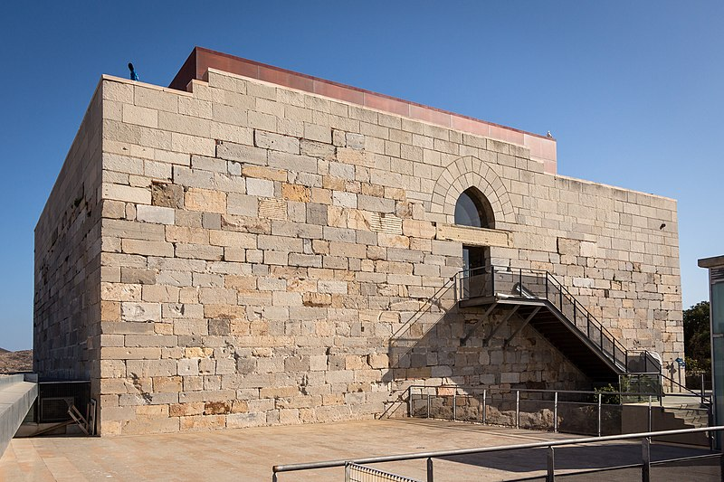

Descripcion
Por la parte posterior de la iglesia de Santa María la Vieja o Catedral de Santa María la Mayor, subirás hasta el Parque de la Cornisa, desde donde disfrutarás de unas fantásticas vistas del Teatro Romano y la ciudad de fondo aunque si quieres unas vistas más completas deberás subir un poco más, hasta llegar al Castillo de la Concepción, situado en una de las cinco colinas que protegen la ciudad y otro de los lugares que ver en Cartagena más bonitos. Alrededor de este castillo medieval del siglo XIII o XIV, tendrás fantásticos miradores al puerto y la ciudad, además de vistas únicas al anfiteatro romano, que está en fase de restauración. Una vez en la fortaleza puedes visitar el Centro de Interpretación de la Historia de Cartagena, que consta de diversas y entretenidas exposiciones que te ayudarán a conocer los 3.000 años de historia de la ciudad y la huella que dejaron las diferentes civilizaciones. En caso de no querer bajar o subir andando, puedes optar por hacerlo por un moderno ascensor panorámico que te dejará a las puertas del Museo de la Guerra Civil. Para entrar al castillo puedes reservar esta entrada que incluye el ascensor panorámico, aunque por un euro más puedes conocer mejor la historia del castillo reservando esta vista guiada.
